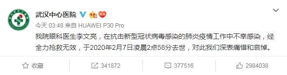
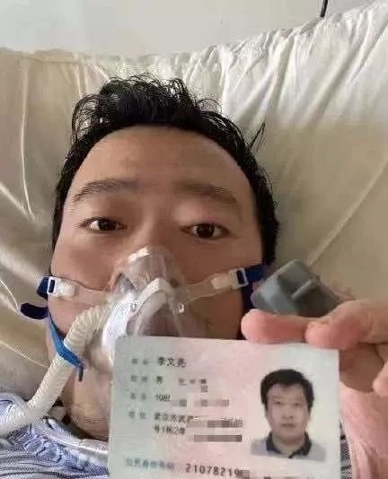
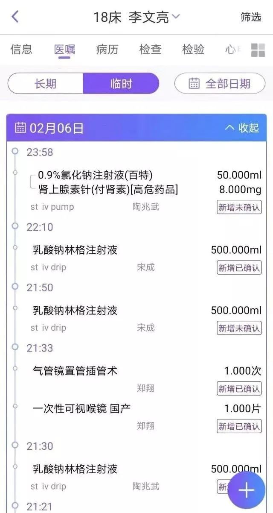
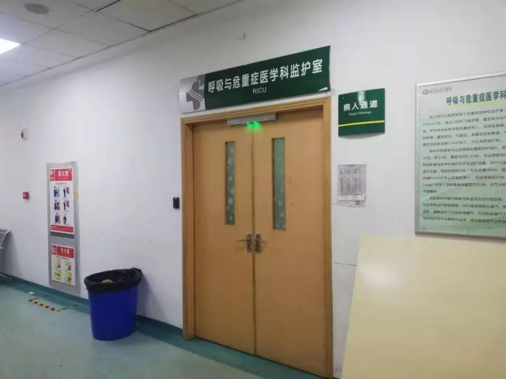
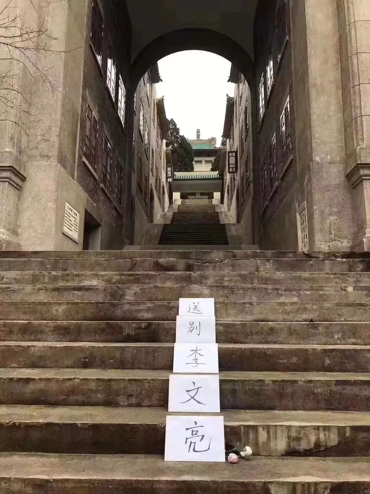
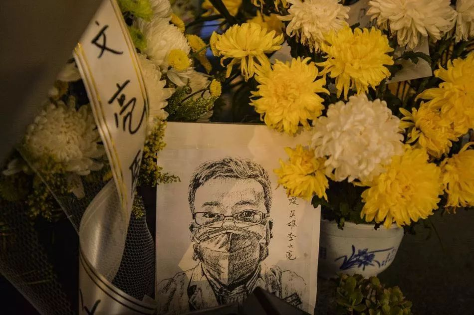

医生李文亮和他眷恋的城
原文链接 备份链接 武汉中心医院眼科医生李文亮（1986-2020）（资料图/图） 全文共*5612*字，阅读大约需要14分钟。 李文亮还活着吗？李文亮抢救过来了吗？这位武汉眼科医生的命运，在这个深夜牵动着很多人的心。直到凌 …

一位网友留言：世上没有从天而降的英雄，只有挺身而出的凡人。这位已经逝去的年轻医生，为仍在抗击疫情的人们提出了警醒：这场战役依然艰巨
*******季录 | 文*******
图片源自网络
2020年2月7日凌晨3点48分，武汉中心医院在其官方微博发布消息：“我院眼科医生李文亮，在抗击新型冠状病毒感染的肺炎疫情工作中不幸感染，经全力抢救无效，于2020年2月7日凌晨2点58分去世。”

武汉中心医院微博截图
2月7日下午13点02分，中央纪委国家监委网站发布消息：“经中央批准，国家监察委员会决定派出调查组赴湖北省武汉市，就群众反映的涉及李文亮医生的有关问题作全面调查。”
李文亮，终年34岁。他是两个孩子的父亲，一个5岁，一个孕期尚不足6个月。在2019年12月30日，他偶然发现可能是一种新型病毒感染的肺炎疫情苗头，于是在专业医护人员微信群里小范围预警，叮嘱大家“注意防范”。当时这个乐观开朗的年轻人不会意识到，自己进入了生命的最后40天。

图片源自网络
虽然李文亮是眼科医生，他在微信群里警示的消息还是很快被截屏传播出去。第二天他被院领导约谈，4天后，他配合警方签下一份训诫书，同意不再扩散“谣言”。
李文亮的一位同事说，院里多数医生了解情况后，只采用口头而非文字形式，互相提醒同事、家人做好防护，李文亮应当是院里唯一被“训诫”的医生。

图片源自李文亮医生微博
“训诫”结束后，李文亮重回眼科医生岗位，无意中接触到感染病人。据上述医生介绍，李文亮是他们院里第一批被感染的医生，彼时多数医生备好了口罩，但“没想到传染性这么强”。如今，李文亮的直接领导，眼科室主任，还在重症监护室里。
1月10日前后，李文亮出现咳嗽、发热症状。李文亮后来接受采访时说，他对病毒不会人传人的说法“将信将疑”。
当时，国家卫健委专家组的专家对于病毒是否人传人尚不确定。李文亮的怀疑和警示，后来都被事实证明是对的。
1月20日，呼吸病学专家钟南山在接受央视采访时表示，新型冠状病毒“肯定人传人”。当时李文亮的父母已确诊，李文亮自己出现症状一周多，先后做了三次核酸试纸检测，两次显示“阴性”，一次显示“阳性”，最后在2月1日确诊。
熟悉李文亮的人说，这位毕业于武汉大学医学院的辽宁小伙就是个普通人，喜欢吃炸鸡、泡面，也爱追星追剧。因为不擅人情世故，他从东北到武汉上学，毕业后先去厦门工作了三年，又回到武汉。今年他将迎来第二个孩子的降生。
即使确诊是冠状病毒感染后，他依然乐观。他喜欢的电视剧主角在他微博留言祝福，他回复期待看到续集。接受财新采访时他表示，被训诫后平不平反并不重要，“一个健康的社会不应该只有一种声音”。

图片源自网络
根据公开数据，截止2020年2月7日15时，全国新型冠状病毒确诊人数31224人，已有637人死亡，1606人治愈。这些数字背后，是和李文亮一样的普通人。
一位武汉中心医院的医生说：“现在不止是悲痛，如果你的救命恩人去世了，你会怎么样？”他在电话那头哭了起来。该医生说，部分一线人员希望能将2月6日定为李文亮医生的纪念日，“记住，不是2月7日，是6日。”这位医生说。
另一位和李文亮相熟的武汉中心医院医生说：“我要是昨天有机会见到他，会告诉他，你放心地去，你担心的事，都不是事，你屋里人有人照护。如果我们有命活下来，以后每年找时间，倒酒祭天祭地祭兄弟！”
“都不肯放弃最后一丝希望”
“他的病情一直都比较重。”一位李文亮的同事说。汇总各方面信息，李文亮在1月10日就出现了咳嗽症状，接着开始感到发热、恶心。1月15日前后，李文亮住进武汉市中心医院重症监护室。他做了三次核酸试纸检测，结果显示，两次阴性一次阳性，2月1日，李文亮确诊。
李文亮的病情从2月5日开始恶化。2月6日10时14分，几位专家来到了武汉中心医院重症科，对李文亮进行会诊。
6分钟后，专家们对李文亮进行了血气分析、动脉抽血，并开始注射激素。查看武汉市中心医院给李文亮的用药记录：他当时情况已经较为危急。
经济观察网报道说，2月6日李文亮还和朋友通了话，称自己胸闷，喘不过气，氧饱和度只有85。《人物》报道称，2月6日下午，李文亮从武汉中心医院南京路院区转到后湖院区，据李的同学说，李的状况很差，因此需要用人工肺ECMO，但由于中心医院南京路园区没有该设备，只能将李文亮转到后湖院区。
亚心医院方面确认，抢救李文亮的这台ECMO仪器是由李文亮的同事从十几公里外的亚心医院借来的，李所在的后湖院区当时没有其他可用的ECMO设备。
各方信息显示：2月6日晚19时前后，李文亮被推进了抢救室。当晚21时18分，用药记录显示，医生对李文亮注射了肾上腺素，专业人士分析，通常这表明病人当时心跳可能已经非常微弱、甚至出现了暂停。上述用药记录还显示，当晚21时33分，医生做了气管插管；医生用上了人工肺ECMO救治。


李文亮2月6日的医疗记录
“晚上9点半插管时，李文亮已经没有了基础生命体征，对插管已经没有反应。”一位接近李文亮主治医生的人士说。
一份聊天记录显示，武汉市中心医院呼吸内科杨勋表示自己愿意实名证明：在对李文亮的最后救治中，医生们胸外按压了3小时，才开始用人工肺ECMO救治。
2月6日晚22时许，李文亮去世的消息第一次传出。微博用户“协和医生Do先生”在22时52分发微博称，“李文亮医生于2月6日21点30分病逝”，微信公众号丁香医生也在22时许推送了《武汉李文亮医生抢救无效去世》，上述微博随后删除。
这些说法被不少来自武汉中心医院的内部声音打破。多个渠道的信息显示，李文亮当晚心跳暂停后，医生们对他进行了心肺复苏抢救，接着进行了人工肺ECMO救治，当晚22时前后，李文亮依然有微弱生命体征。
“人体是一个非常精密的仪器，要把各个地方调好，是非常难的。”武汉大学急救中心主任助理、急诊外科主任沈俊在得知这一消息时说。他解释称，ECMO是代替心肺功能的，人即使两暂时没有了心肺功能，也可以通过ECMO维持他其它器官的血和氧供应，不至于立即发生多器官功能衰竭。
“但这样的话，就得把这个机器用到极致。需要做到不需要心肺，完全用机器代替，人的生命体征稳定，各个器官工作正常。”沈俊表示。沈俊和团队此前曾用ECMO救活了一位新冠患者。
2月6日晚上23时许，有关李文亮死亡的消息第二次传出。微博用户“谭飞”称：“22：57，李文亮医生卸掉了ECMO，与世长辞”。
2月7日零时38分，武汉市中心医院官方微博称：李文亮“目前病危，正在全力抢救中。”财新记者现场看到，有进出抢救室的巡回护士说，不行了，但里面仍在抢救。
几乎同时，一位接近李文亮的人士表示，当时确实在用人工肺ECMO救治李文亮，医院尚未向其家属发放死亡通知书，“但事实上基本是没有救回的可能性了。”
此时尽管已过了午夜，不少人还在社交平台上为李文亮祝福，期待奇迹出现。一名中心医院医护人员说，2月7日凌晨1点前，还有同事在对李文亮进行抢救，“大家都不肯放弃最后一丝希望”。

摄于武汉中心医院李文亮抢救室外
一位武汉中心医院的医生说，2月7日凌晨两点以前，李文亮的救治病例在系统里还能查看，但两点以后便不再显示。
2月7日凌晨3时48分，李文亮死亡的消息第三次传出。这次消息来自武汉中心医院官方微博：“经全力抢救无效，李文亮于2020年2月7日凌晨2点58分去世，我们深表痛惜和哀悼。”
有人于2月7日凌晨零点29分、上午11时30分两个时段，分别给李文亮医生所在的武汉中心医院党委书记、院长、4名副院长打电话、发短信核实信息，6人均未接电话，也未回复信息。
李文亮去世的消息公布后，外界对他的哀悼和敬意不绝于耳，许多人称他为平凡英雄，对他的离世深表不舍，人们不希望看到一位说了真话的人遽然离世。一位网友评论：他不是英雄，是和我们一样的凡人，他做的是我们每一个人都可能去做的事。
李文亮去世前后，他的同事们分外揪心。“没有办法进行悼念活动，但我们想着为他的家属做一些事。”一位李文亮的同事说，2月7日一早，医院工会向职工发出了向李文亮家属捐赠的公告，但“我们都更愿意直接捐给家属，而不是通过工会。”
一位其他科室的医生说，李文亮是中心医院感染医生中第一个去世的病例，目前还有数位医生在重症监护室。
李文亮父母此前也被感染，曾在武汉当地医院住院，目前已经出院，仍在武汉。其妻子目前怀孕近6个月，没有受到感染，正在老家与他们5岁的长子进行自我隔离。
2月6日23:25分，世界卫生组织发布一则推特：“我们为李文亮医生的离去感到深深的悲痛，我们所有人都该赞美他就新冠病毒疫情所做的工作。”
“真相最重要”
2019年12月30日晚上，李文亮有些生气。
他特别叮嘱过武大的同学们，不要把自己下午在群里发的截图转发出去。没想到晚上就有一堆人拿着聊天记录截图追问他：SARS真的又回来了吗？
截图中李文亮的姓名和单位都没有被打码，“华南海鲜水果市场确诊7例SARS”下面，配了一张：“临床病原体筛选结果”的检测报告。这足够让经历过SARS的人们感到恐慌，以至于不少人忽略了李文亮后面几句话：“最新消息是，冠状病毒感染确定了，正在进行病毒分型”，“不要外传，让家人亲人注意防范”。
当天，武汉卫健委在内部下发红头文件，称武汉出现不明原因肺炎，可能与华南海鲜市场有关联。
李文亮的同事们，中心医院的其他人，也获悉了不明原因肺炎的信息，更多是口头上互相通知亲友、同事注意防护，没有人像李文亮一样用文字告知更多人。“这在规定上是不允许的。”一位中心医院的医生说。
2019年12月31日一早，李文亮被武汉市中心医院领导叫过去谈话，他被告知卫健委的专家们因为这件事凌晨一点半还在开会讨论，他后来在接受财新记者采访时谈到，当时心里想着“承认下错误应该就没事了”。
1月1日，武汉警方通报了8名“造谣者”的消息。李文亮不知道自己是不是其中之一，后来发现，8名“造谣者”多位是武汉当地医院医生。
在李文亮被“约谈”的同时，武汉中心医院很多医生开始准备防护物资。“临床一线医生不可能没有根据地提醒周围人，我们愿意去相信他。”一位中心医院的医生说，他听到李文亮的警示后，号召科室的人紧急囤了一盒N95口罩。
1月3日李文亮被叫去派出所，签下一份《训诫书》。从没遇到过这种事的李文亮免不了担心，他怕自己被派出所拘留了影响晋升，于是配合流程签了字。
后来他被感染，躺在中心医院的病床上接受财新采访，说自己没想过走司法渠道找公安，“我很怕麻烦，公道自在人心。”
在同事们眼里，他对工作尽心尽力。接受训诫后不久，1月8日，他开始作为眼科医生接诊。但从1月10日开始，他先是出现了咳嗽的症状，没放在心上，依然坚持在一线工作。1月11日，他的体温升到了38.2℃，“这才意识到问题大了”。当天做的CT结果显示，李文亮双肺多发感染，出现磨玻璃样病变。
和他同期出现症状的，还有来照顾病人的家属，同科室的两位同事，甚至之前口头警告不要再扩散“谣言”的医院领导。他的领导、眼科室主任，现在仍在重症监护室。
李文亮感知到了此次疫情的苗头，但病毒的扩散速度还是远远超出他的预想。
武汉中心医院的一位医生说，2019年12月底，他们开始戴上口罩接诊，但“谁都没想到传染性这么强”。1月10日前后，是该医院医护人员第一批感染高峰，“医生们自己去网上买了护目镜等防护物资”。
对于李文亮来说，传染没有按下暂停键。1月15日前后，李文亮的父母相继被感染入院。尽管此前他已经做了主动隔离，但依然没能阻止病毒传播。
在此过程中，李文亮一直希望能尽早确诊，这意味着他可以有更合适的床位和对应的治疗。一位武汉本地媒体人说，李文亮前后做过三次核酸检测，前两次都是阴性，直到第三次才是阳性，“中间耽误了时间”。据了解，当时武汉的情况是，医生使用核酸试纸也需要排队，只有重症才能优先。
一位中心医院的医生说，“核酸试纸的阳性率可能只有10%，有一些医护人员感染后出院，现也在隔离中，仍然没有确诊。”
据《北京青年报》报道，李文亮在1月26日前后体温反复，那时候已插上呼吸管，大小便不能下床，无法开口交流，只能靠打字，时间长了会头晕。他的同事说，1月20日前后李文亮的病情好过一段时间，“但之后病情就迅速加重了”。
期间，李文亮接受了几家媒体采访，叙述他发布信息的经过。
1月23日上午10时，武汉正式实施公共交通系统“封城”。此后武汉市市长周先旺在接受媒体采访中表示，在“封城”之前，已经有500万人离开武汉。
1月27日，武汉新增确诊病例近千人。周先旺在接受央视采访时承认，当地政府有关冠状病毒的信息披露不及时，希望大家理解。“只要把这个疫情控制好，我们（愿意）革职以谢天下。”
在离开的500万人中，有多少是因为8位“造谣者”的信息才离开的？李文亮一位学妹也是医生，她说自己正是看到李文亮在群里发出提醒，才有了防范意识。一位同事将李文亮称为“救命恩人”，他说：“我们院很多医生都是听了他的警示开始准备防护物资，不然的话感染情况比现在更严重。”2月7日中午，这位医生从重症病房出来，他上午救治的病人就是一位医生，进入病房时没有N95口罩可以戴。
1月28日，最高人民法院微信公号发的一篇文章谈到武汉8位“造谣者”，文章称，如果社会公众当时听信了这个“谣言”，并且基于对SARS的恐慌，采取佩戴口罩、严格消毒、避免再去野生动物市场等措施，这对我们今天更好地防控新型肺炎，可能是一件幸事。
当时已经呼吸困难的李文亮也看到了这篇文章，他对来访的财新记者说：“平反不重要，大家看到真相最重要。”
1月初，武汉中心医院疫情防控领导小组选派医护人员上一线，李文亮在微信群中第三个报名。入院治疗后，他也想着康复后要重回一线。
2月1日李文亮最终被确诊，他发了条微博：“终于尘埃落定”还配上个狗头表情。

李文亮医生微博截图
“祭天祭地祭兄弟”

武大樱园，图片源自网络
2月7日上午，李文亮的遗体被运往汉口殡仪馆火化。这家殡仪馆在武汉市位置偏远，一路上需要检查通行证，殡仪馆早已封闭，没有亲友前去送别李文亮。当天武汉殡仪馆和武汉中心医院的对外联系电话均难接通。
作为武汉市中心医院的一名医生，李文亮一直是个普通人。武汉市中心医院两个分院一共4000多人，医院很多人之前都没有听过李文亮的名字。和他同院的医生孙文武说，初识李医生，就是因为1月初院里对一位讲真话的医生做了处罚；再见到，已经是科里的同事站在他周围，给他上ECMO。
李文亮曾说，他对人生的态度是：不经审视的人生是不值得过的，希望大家都能实现自己的价值。
一位熟悉李文亮的同事说，李文亮乐观、讲义气、很会照顾人，“他是那种人，受人滴水之恩，会涌泉相报”。
一次同事们组团去巴厘岛游玩，该同事因排班无法前往，“我的家人一路上很受他的照顾”。据他说，李文亮是“大家的免费随身英文翻译，还会些三脚猫日语，在旅行过程中派上了用场。”
另一位同事说，在日常工作中，李文亮是一个细致、贴心的医生，对病人的疾病预后、注意事项交代都很细致。
据他周围的人介绍，他也像一名普通的“85后”青年，爱追星、追剧，喜欢看汽车、电子产品评测；经常半夜想吃东西，炸鸡、方便面、日料……对他来说，好吃的实在“诱惑太多”。他也抱怨不想上班，在放假前一周，就一天天倒数。
有一次他逛超市，看到车厘子一斤158元，感叹实在吃不起。看到微博上有转发抽奖送车厘子，他兴冲冲转发了。有人仔细看他之前发的微博，一大半是转发抽奖。
同事们还说，李文亮也常常表现出性格里的热心和热血。2013年4月雅安地震，他捐了两次款，都是在微博上捐的。2019年12月28日，他转发了北京民航总医院杨文医生被杀害的新闻，表示难过、愤怒。
他有一个幸福的家庭，妻子在武汉爱尔眼科医院做医生，目前怀胎近6个月，预计今年7月待产，他们的长子5岁。他的微信头像是蜡笔小新一家四口。2019年11月9日，他在微博上转发了秋日长城美景，说什么时候能带着儿子体验一下。
在微博上，李文亮写下的2020年愿望是：新的一岁希望能做一个简单的人，看得清世间繁杂却不在心中留下痕迹，保持足够的平常心。
一位曾经采访过李文亮的记者在他去世后和人写下文章，《我们昨晚失去了一位善良而坦荡的采访对象》。她是最早采访李文亮的记者之一。
那时李文亮正躺在重症病房里，采访通过打字完成，“他打字特别慢，每次也就几个字回复，交流一段时间后他还需要休息一会儿。现在想来他当时接受采访也太不容易了。”这位记者对《财经》回忆。
但尽管如此，李文亮的讲述仍然毫无保留，“看到采访内容我就‘方’了，这么详细的经过，只要对着人找，一找一个准。”记者为了保护他，给他匿了名，还把他的病例单、训诫书、医院标志等都打了码，但之后她看到李文亮以真名出现在别的报道里。
记者陆续跟李文亮保持着联系。1月27日上午9点的对话里，她问李文亮现在每天要吃多少药物，李文亮回复“很多”，之后她请李文亮更具体一点，他说“我没精力了”。
和李文亮熟识的医生朋友说，他和李文亮在微信上最后一次对话是，李文亮说“武汉还是有希望的，估计2月底能基本控制局势”，李文亮还提醒他面对发热患者要小心，防护做不好也会丟命。他们约好，等李文亮身体好了一起喝酒。
“我要是昨天有机会见一下清醒的他，会先告诉他，你放心的去，你担心的事，都不是事，你屋里人都有人照护；第二，你休息休息，换兄弟们上，兄弟们一直在上，不掐灭病毒对不起你的牺牲，我们这些弟兄们，有命在，就扛到底！！第三，约好的吃饭，目测已经来不及了，如果我们这些人也要牺牲，那蛮好，趁着还没走远，就地解决！！如果我们有命活下来，以后每年找时间，倒酒祭天祭地祭兄弟！”
2月7日上午，李文亮的医生朋友设置了手机日历：以后每年2月6日，都是给“李文亮祭祀”的日子，“每年约2月6号，吃饭！”同是医生的他，在武汉“封城”前向医院发出请战书：“随时听候召唤和派遣，不计生死，不计报酬。”
李文亮一位同事得知他去世后，在朋友圈回忆和他相处的细节：你是我眼里最可爱的同事，说话慢吞吞，从来不大声、不急躁。有人找你换班你从来不拒绝，不管人家说什么不着边的话，你都会回一句，好的。这样的你，竟然走了。
2020年2月7日上午，国家卫健委官网发布消息：“武汉市中心医院李文亮医生在抗击疫情中感染新型冠状病毒肺炎，经全力救治不幸逝世，国家卫生健康委表示深切哀悼，向李文亮医生的家属表示诚挚慰问。”
在2月7日举行的国务院联防联控机制发布会上，国家卫健委新闻发言人宋树立表示：“李文亮医生在抗击疫情中感染新型冠状病毒肺炎，经全力救治不幸逝世，国家卫生健康委表示深切哀悼，向李文亮医生的家属表示诚挚慰问。”她还说，当前抗击疫情正处于关键时期，防控形势依然严峻复杂，需要全社会更加关心关爱医务人员。
当天上午，湖北省卫健委官网发布消息：“获悉武汉市中心医院眼科医生李文亮在抗击疫情中不幸感染新冠肺炎，经全力抢救无效不幸去世。省卫生健康委向李文亮医生表示深切哀悼，并向其家属表示诚挚慰问！”
2月7日上午，武汉市政府官网上发布了一条《公告》：“武汉中心医院李文亮医生，因感染新型肺炎，经全力抢救无效不幸去世。我们深表哀悼，万分惋惜！对其坚守一线抗击疫情表示敬意，对其家人表示诚挚慰问！”
当天上午，湖北省人民政府官网转载了省卫健委的深切哀悼和武汉市政府的致敬。
另据湖北广电融媒体记者报道，经武汉市中心医院申请，武汉市人社局2月7日认定，李文亮作为医护人员在抗击新型冠状病毒感染肺炎疫情工作中不幸感染并经抢救无效去世，认定为工伤。据核算，李文亮工伤保险待遇如下：一次性工亡补助金78.502万元、丧葬补助金3.6834万元。
2月7日晚9点多，武汉市中心医院门口响起了哨声，伴随着“武汉加油”的喊声。许多市民前来悼念李文亮，央视采访了一名家住医院附近的50岁市民，她抹着眼泪说：“我不认识李医生，但我觉得必须来一下。我本来想送一束花，但是没有卖的。”
但是医院门诊大楼门前仍然摆满了鲜花，多是黄色和白色的菊花，“谢谢你的勇敢”，是鲜花上出现得最多的悼词。


2月7日晚，武汉市中心医院门诊楼前
感谢所有提供相关信息、资料和帮助的朋友


责编 | 蒋丽 lijiang@caijing.com.cn

原文链接 备份链接 武汉中心医院眼科医生李文亮（1986-2020）（资料图/图） 全文共*5612*字，阅读大约需要14分钟。 李文亮还活着吗？李文亮抢救过来了吗？这位武汉眼科医生的命运，在这个深夜牵动着很多人的心。直到凌 …
原文链接 备份链接 全文共*1529*字，阅读大约需要3分钟。 训诫书犹在，“吹哨人”何以安息？人们还希望看到对李文亮等人的训诫能得到纠正，让付出了巨大代价的“吹哨人”能得到正名。 本文首发于南方周末 未经授权 不得转载 文 | …
原文链接 备份链接 他曾许过一个新年愿望，新的一岁希望能做一个简单的人，看得清世间繁杂却不在心中留下痕迹，保持足够的平常心。他还说，不经审视的人生是不值得过的，希望大家都能实现自己的价值，共勉。他的微信签名是，「理论是灰色的，生命之树常 …
原文链接 备份链接 3月3日。 依然天阴，有点冷嗖嗖的。我在郊区的邻居一早发给我照片。留言说，你家的海棠开花了，你的微信文被封了。微信内容被封，我已习惯。但海棠开花却实在让人高兴。去年夏秋，一直大旱。树叶全枯并且掉光，我很担心这棵树会死 …
原文链接 备份链接 从1月23日“封城”到元宵节，已经过去整整17天。即使我每天忙于记日记，也觉得时间过得很快啊。 过去我要早起，6点起床，7点到办公室，不堵车。现在则是天天睡到自然醒，有点提前退休的感觉。虽然我还有两年上班的时间。 …